| Ad | Sekundär-Angle | Psychologischer Hebel | Für wen die Ad gebaut ist |
|---|---|---|---|
| 11 Dreckige Hände | Identität / Anti-Scroll | Selbstbild („Ich bin Macher, kein Scroller") | Kernzielgruppe, die sich über Handwerk definiert |
| 12 Dein Projekt | Take-Home / Besitz | Endowment-Effekt — man verliert etwas, das man schon fast besitzt | DIY-Interessierte, die ein konkretes Ergebnis wollen |
| 13 Alles drin | Value / Einfachheit | Risiko-Entschärfung („keine versteckten Kosten") | Preisbewusste & Unentschlossene, letzter Einwand |
| 14 Stat-Cards | Programm-Beweis | Konkretheit schlägt Behauptung (Workshops als Bild) | Kalte Audience, die das Festival noch nicht kennt |
| 15 Ticket-Grid | Visualisierte Knappheit | Loss Aversion, ohne Text verständlich | Scroll-Stopper für alle — funktioniert in 1 Sekunde |
| 16 Polaroid | Emotion / Erinnerung | Antizipierte Nostalgie („das hätte ich verpasst") | Familien & Freundesgruppen, warmer Traffic |
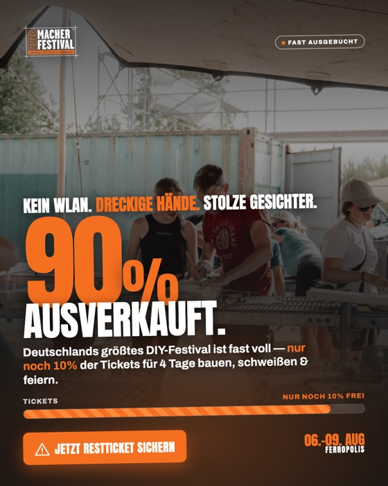
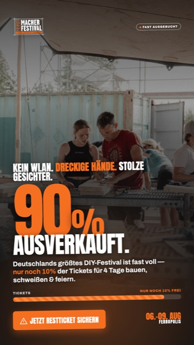
Der Dreiklang „Kein WLAN. Dreckige Hände. Stolze Gesichter." ist das komprimierteste Markenversprechen der ganzen Kampagne — er sagt in sechs Wörtern, was das Festival ist und was es nicht ist. Die Scarcity-Klammer macht daraus eine Entscheidung statt einer Info.
Stärkste Identitäts-Ad im Set. Beobachten: Saves & Shares — Identitäts-Angles werden geteilt, nicht nur geklickt.
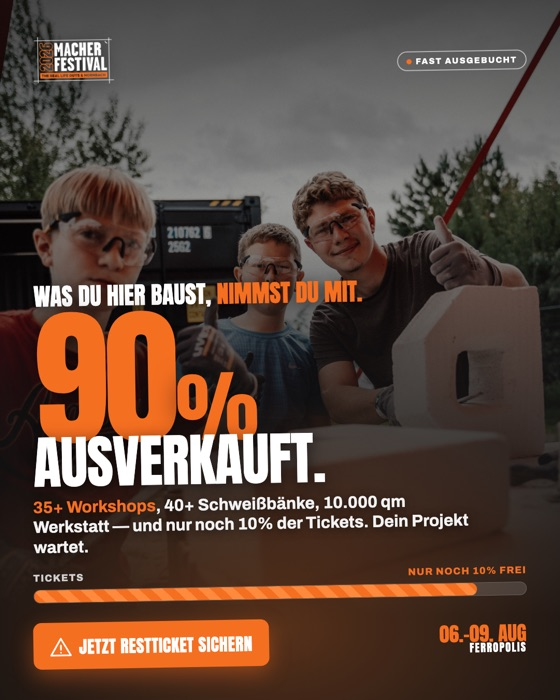
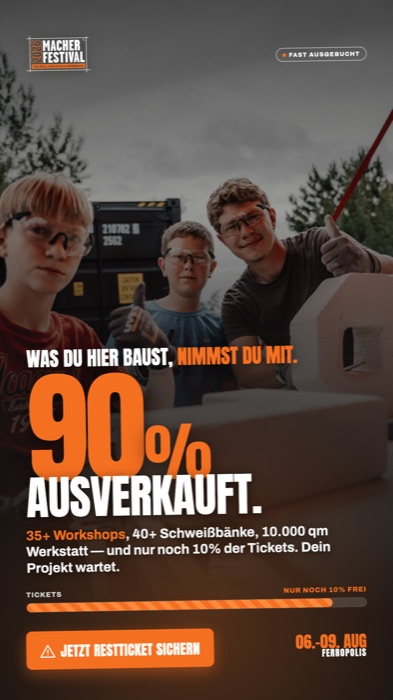
Das ist der USP, den kein anderes Festival kopieren kann: Man nimmt physisch etwas mit. Die Copy verkauft nicht das Event, sondern das Ergebnis danach — und die Zahlen (35+/40+/10.000 qm) machen das Versprechen falsifizierbar statt werblich.
Der „ownable" Angle der Marke. Wenn eine Ad langfristig trägt, dann diese.
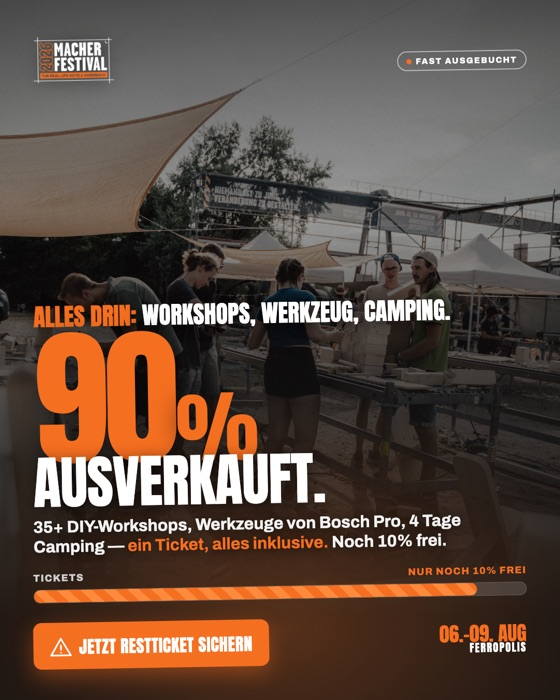
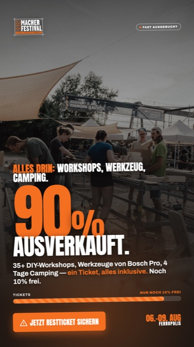
Deutsche Käufer haben Abofallen-Trauma — „keine versteckten Kosten, kein Aufpreis" ist im DACH-Markt ein messbarer Conversion-Hebel. Diese Ad beantwortet den letzten Einwand vor dem Kauf und gehört deshalb strategisch ans Ende der Customer Journey.
Eher Closer als Opener. Im Prospecting okay, ihr eigentliches Zuhause wäre ein Retargeting-Adset.
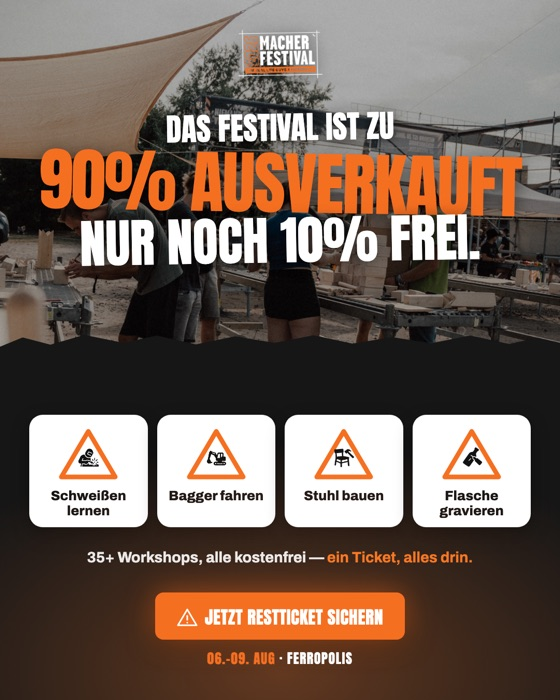
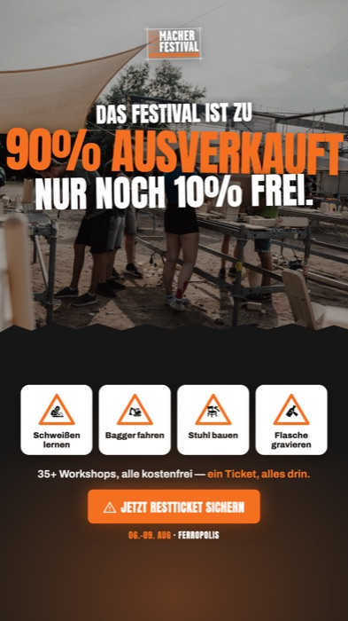
Die vier Workshop-Cards mit den Original-Piktogrammen sind der schnellste Weg, einer kalten Audience zu erklären, was hier passiert — konkret („Bagger fahren") statt abstrakt („einzigartiges Erlebnis"). Der Aufbau ist die bewährte Struktur der Bestands-Ads, nur mit Scarcity-Kopf.
Bester Erklär-Einstieg für Neue. Ideal als erste Berührung in der Cold Audience.
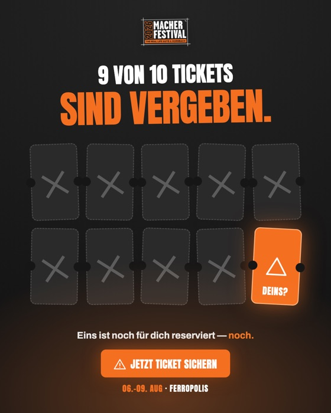
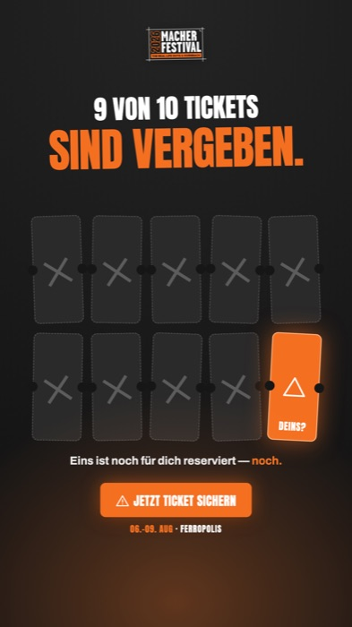
Die einzige Ad, die ohne ein einziges Wort funktioniert: 9 durchgestrichene Tickets, eins leuchtet — „DEINS?". Loss Aversion als Bild statt als Behauptung. Das personalisierte Fragezeichen macht aus der Marktinfo eine direkte Ansprache.
Der Scroll-Stopper des Sets. Größte visuelle Differenz zu allem, was sonst im Feed läuft — Hook-Rate beobachten.
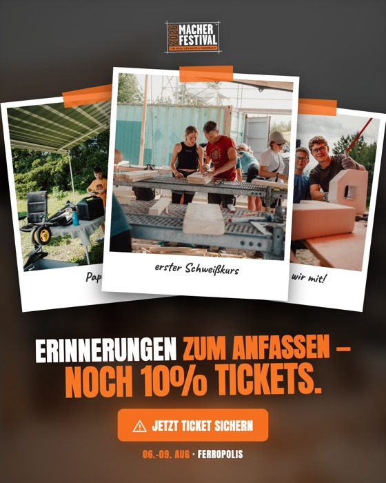
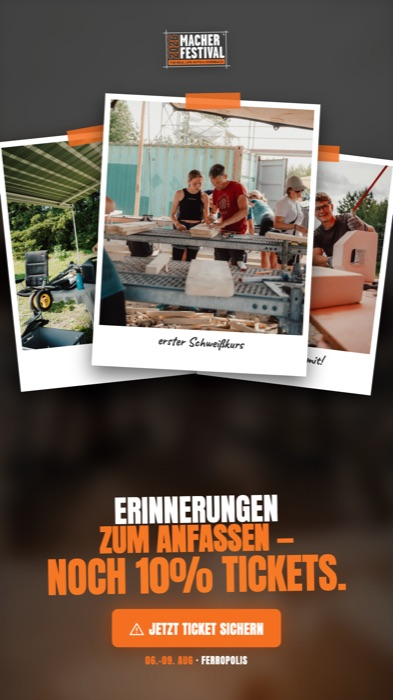
Drei Polaroids mit handschriftlichen Captions („Papa & ich", „erster Schweißkurs") erzählen die Erinnerung, bevor sie passiert ist. „4 Tage, die du nicht nachkaufen kannst" dreht Scarcity von Tickets auf Zeit — emotionaler als jede Prozentzahl.
Emotionalster Einstieg im Set. Prädestiniert für Familien-Zielgruppe und den /eltern-und-kind-Funnel.
Jede Ad startet mit „Sichere dir / Hol dir / Schnapp dir" + Verknappung — komplett vor dem 125-Zeichen-Cut. Kein Aufwärmen, die erste Zeile ist der Verkauf.
Statt Ausrufezeichen: „dann ist Schluss", „war's das", „wer zu lange wartet, schaut im August nur zu." Echte Konsequenz erzeugt mehr Handlungsdruck als Hype — und bleibt UWG-sicher, weil die 90% real sind.
👉-Zeile mit Link im Text + CTA-nahe Headline neben dem Button. Jede Ad sagt zweimal „jetzt sichern", einmal im Bild sogar ein drittes Mal.